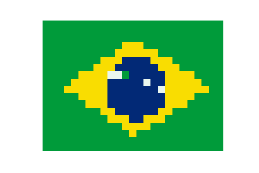

National flags are symbols of countries, representing their history, religions, values, hope, or identities. Each color, strip, star, or cross on a national flag tells a story. What are the most frequently used colors on national flags? Are there any patterns in different regions? How could the geographical location correlate with colors used in flags?
In this research, we are investigating into the design of 194 country flags and the countries' geographic locations. Follow us to reveal the mystery of national flags!
Ruofan Yao | Kathy Yin
ryao9@wisc.edu | kyin29@wisc.edu